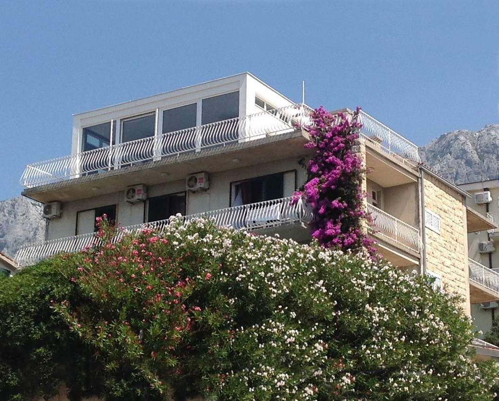
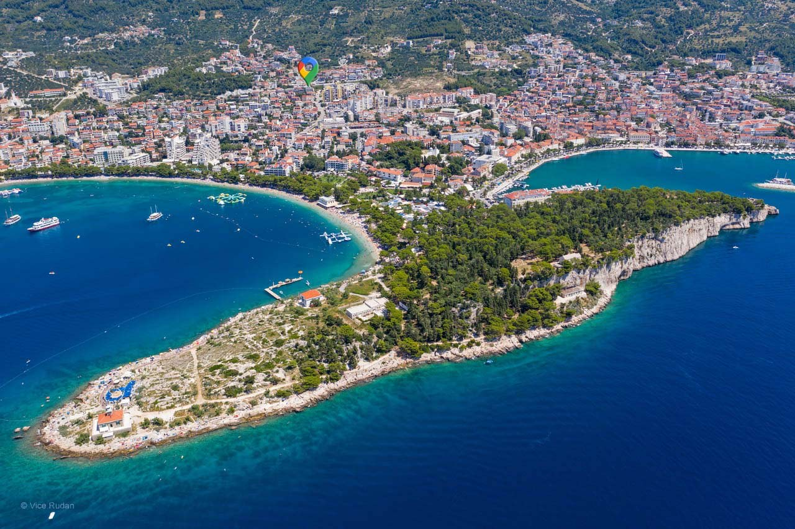
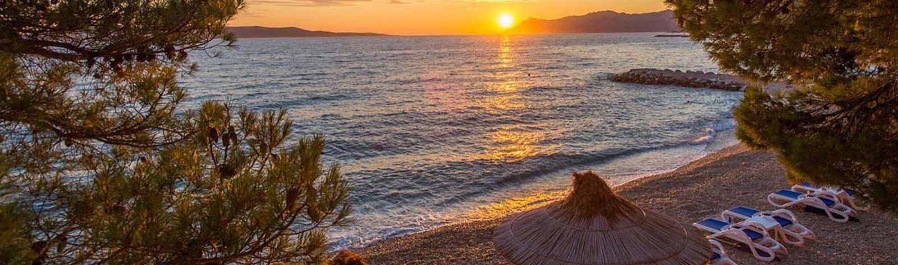
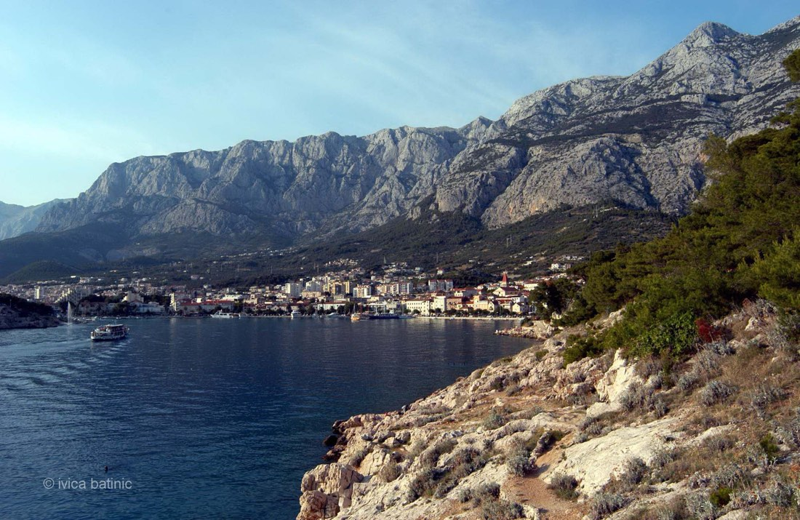
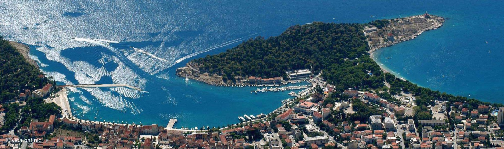
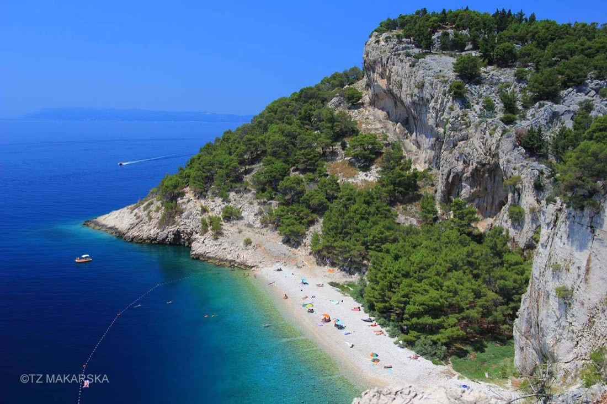
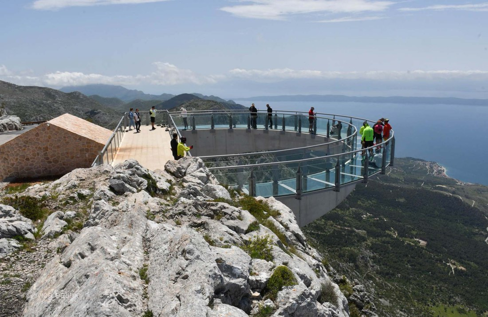
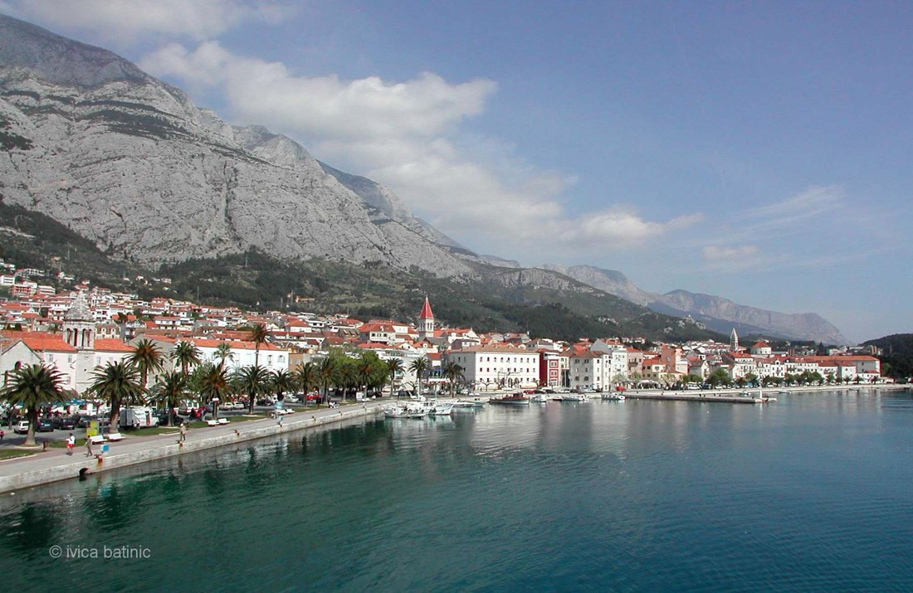
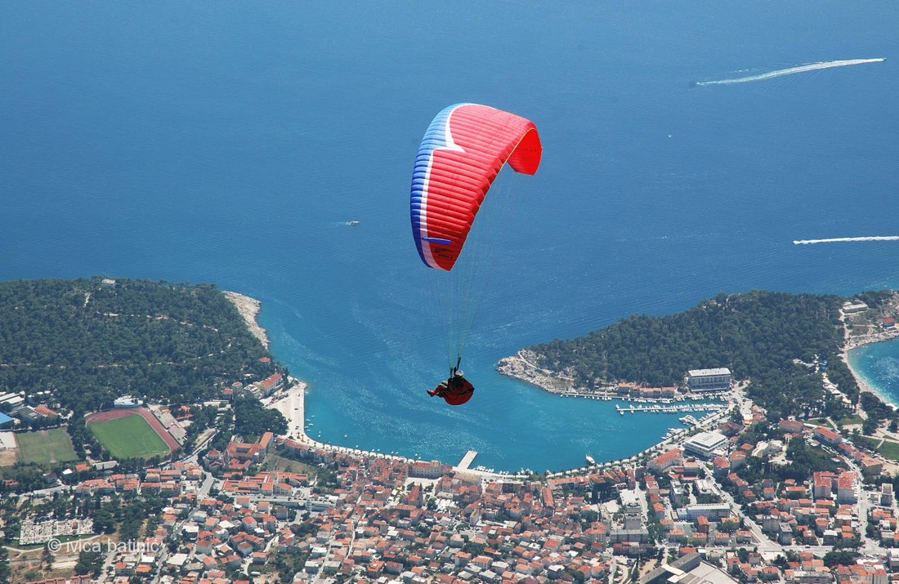
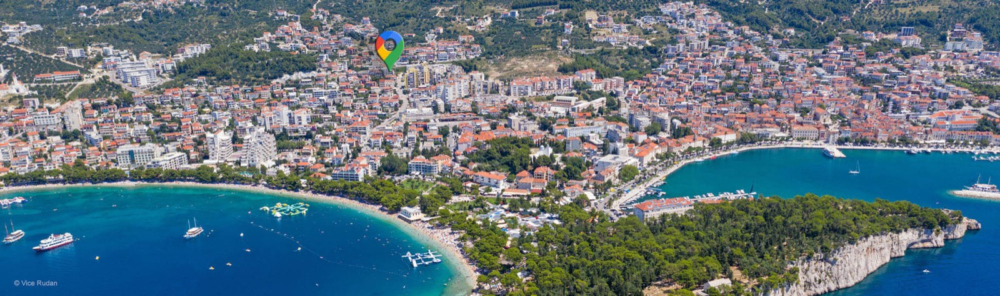

Penthouse studio apartman za 2
od 40 €po osobi dnevno
Udobne, klimatizirane sobe s balkonom, bogat doručak na natkrivenoj terasi i zajednička kuhinja – u ulici Kipara Meštrovića, u Makarskoj. No, prije svega nudimo vam naše prijateljstvo i gostoprimstvo.


Gostima sa svih kontinenata nudimo udobne, klimatizirane sobe s besplatnim pristupom internetu, upotrebu zajedničke kuhinje i privatno parkiralište uz kuću.
Sobe čistimo svaki dan, a doručak poslužujemo na natkrivenoj terasi. No, prije svega nudimo vam naše prijateljstvo i gostoprimstvo!
Annette & Srđan Batošić
od 40 €po osobi dnevno
od 34 €po osobi dnevno
od 30 €po osobi dnevno
od 30 €po osobi dnevno
* s pogledom na more ili djelomičnim pogledom na more. Cijene su po osobi dnevno, prema cjeniku za razdoblje od 1. svibnja do 30. rujna. Doručak 15 €, boravišna pristojba 1 € po osobi dnevno.
Svaka soba ima kuhalo za kavu i čaj, mini-hladnjak, LCD televizor, klima-uređaj i stropni ventilator.
U predsezoni i posezoni u pansionu se održavaju satovi joge. Detalje i termine Annette objavljuje na profilu Annette's Yoga.
Annette's YogaIsplovite s nama našim motorsailerom MacGregor 26X – na izlet ili na poduku iz jedrenja. Pitajte nas za termine.
Pošaljite upit
„The rooms are better than on photos (how often can you get this?)”
Julia, kolovoz 2019. · utisak s batosic.comGosti nam pišu na mnogo jezika. Ovdje je izbor utisaka objavljenih na našoj stranici, u izvornom obliku.
Very friendly and helpful hosts! … Room was cleaned everyday, you have access to a communal kitchen and you can even borrow beach mats! Our favourite thing was the breakfast, absolutely delicious with fresh bread and pastries.
Smještaj je super, uredan, imate osjećaj kao da ste u mini hotelu, također usluga spremanja sobe je super. Također parking je odličan.
The room we had was on the top floor, it had amazing sea view. You could watch the sunrise and the sunset, and all the changing colors of the sky right from your balcony. The house is located slightly up the hill – 5 mins away form the beach, but that was a bonus for us cause it's quiet and peaceful …
Eine Pension zum Wohlfühlen! Sehr nette, zuvorkommende und herzliche Gastgeber. Tolles Frühstück, sauberes und gepflegtes Zimmer.
Predivan smestaj, ljubazni domacini, pravo mesto ukoliko letujete u Makarskoj. … Soba je prostrana, sa prelepom terasom. Kupatilo je novo, i uvek cisto. … Na odlasku dobijete cak i poklon od domacina, prelepu flasu domaceg vina.
Top communication bought online and in person. Very friendly and helpful hosts. Shiny clean. … Good breakfast. 5 minutes walking to the sea. All in all super value for the price.
Odlican smjestaj po odlicnoj cijeni. Sigurno cu doci i sljedece godine.
Friendly and warm host, clean room, good location (not far to the central beach and center). Need to notice, that appartments are a little bit uphill 😉
Makarska je turistički centar srednje Dalmacije, a najugodnija je od lipnja do rujna. Ribarske večeri, ljetni karneval, koncerti i izložbe dio su ljetne ponude, a izletničke brodice voze na obližnje otoke Brač i Hvar.
Nad gradom se uzdiže planina Biokovo, s koje se pruža pogled na dalmatinske otoke. Do vrha se može pješice za 2–3 sata planinarenja ili automobilom za oko 45 minuta.
do Splita – oko sat vremena vožnje prema sjeveru
do Dubrovnika – oko 2 sata prema jugu
automobilom do vrha Biokova






Fotografije s batosic.com · © TZ Makarska, Ivica Batinić, Vice Rudan
Niste našli odgovor? Nazovite nas na +385 95 821 3105 ili pišite na batosic@batosic.com.
Ne. Doručak se plaća posebno, 15 € po osobi, a poslužuje se na natkrivenoj terasi.
Da, natkriveno privatno parkiralište uz kuću. Potrebna je rezervacija, a cijena je 10 € dnevno.
Djeca mlađa od 3 godine odsjedaju besplatno. Djeca mlađa od 12 godina ne plaćaju boravišnu pristojbu.
Boravak kraći od 4 noći košta 30 % više. Jedna osoba u sobi plaća dodatak od 50 %.
Klima-uređaj se naplaćuje 2 € po sobi dnevno, samo za dane upotrebe. U sobama je i stropni ventilator.
Gosti u svojim utiscima navode 5 do 10 minuta hoda do plaže i centra, uz napomenu da je povratak uzbrdo.

Otvori u Google kartama